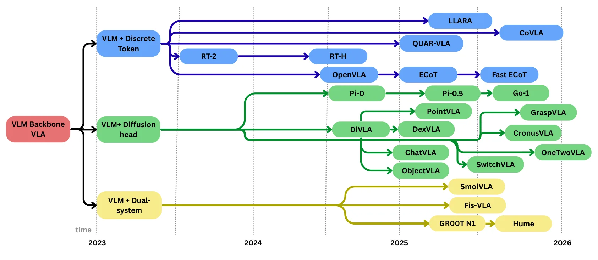
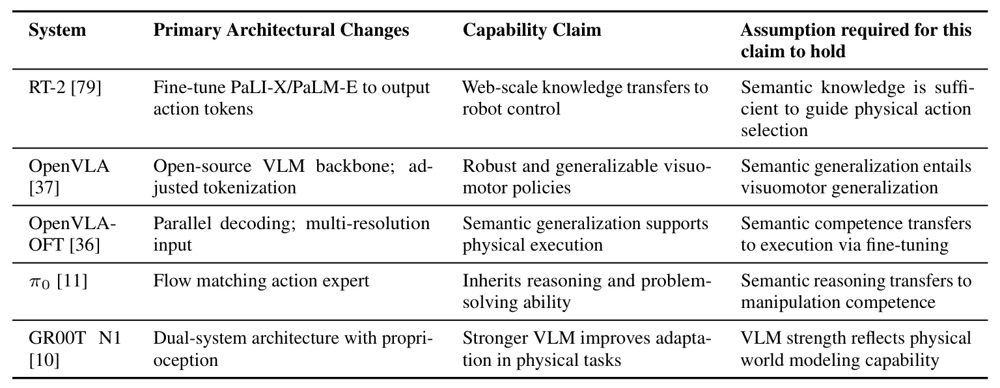
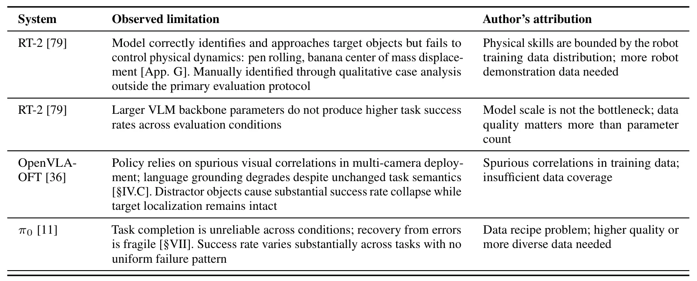

位置论文：现有协议无法验证 VLA 模型真的具备物理推理能力Position: Vision-Language-Action Models Cannot Be Verified to Perform Physical Reasoning
不是 SLAM/三维重建，也无新算法；但对使用 VLM/VLA 做导航、操作或规划的机器人评测有警示价值。
一句话工作总结
提醒 VLA 机器人评测不要把任务成功率直接等同于物理推理，建议用受控变量拆分语义与物理泛化。
摘要
该位置论文认为，机器人 VLA benchmark 中的 success rate 无法区分模型成功来自语义匹配、训练/测试分布重叠，还是来自真实物理泛化。作者把 VLA policy 分解为 semantic mapping 与 physical action decision，指出当前评估协议存在 identifiability gap；连续系统往往继承并强化之前对性能提升的叙事，而没有隔离 causal mechanism。论文建议用受控变化的评估设计，分别测量语义泛化和物理泛化，从而在不访问模型内部的情况下更可靠地归因性能。
Vision-Language-Action (VLA) systems, built on pretrained vision-language models (VLMs), have shown rapidly improving performance on robot manipulation benchmarks. These gains are commonly interpreted as evidence that semantic representations learned from internet-scale data transfer to physical execution generalization. This position paper argues that the assumption underlying this interpretation -- that semantic generalization is sufficient to support physical action decisions -- has not been independently verified and cannot be tested under current evaluation protocols. We support this claim by decomposing VLA policies into semantic mapping and physical action decision, and showing that task success rate -- the dominant evaluation metric -- cannot distinguish between these two sources of capability. As a result, improvements in benchmark performance are consistent with multiple competing explanations, including semantic matching, distributional overlap, and genuine physical generalization. We further argue that this identifiability gap has been reinforced through narrative drift, whereby successive systems inherit and strengthen prior interpretations of performance gains without isolating the underlying causal mechanism. To address this limitation, we propose a research direction based on evaluation designs that introduce controlled variation to separately measure semantic and physical generalization. Such designs make it possible to causally attribute performance without requiring access to model internals, and to empirically assess the role of VLM backbones as semantic interfaces rather than implicit sources of physical competence. Our goal is not to refute the role of VLMs in robotics, but to clarify the conditions under which claims of physical generalization can be meaningfully evaluated.
中文解读摘录
- 为什么看：位置论文，不给新算法；但它提醒 VLA 机器人 benchmark 的 success rate 不能区分语义匹配、分布重叠和真实物理泛化。
- 方法要点：把 VLA policy 分解为 semantic mapping 与 physical action decision，指出当前评估指标存在 identifiability gap，并建议通过受控变量设计分别测量语义泛化和物理泛化。
- 结果信号：核心贡献是评估框架批判，而不是实验 SOTA；对机器人基础模型评测叙事有警示意义。
- 跟踪建议：如果用 VLM/VLA 做导航或操作决策，应在评估集里加入语义不变但物理关系变化、物理不变但语义变化的控制实验。
- 链接：abs · PDF
图表/页面预览
{kind=link}

{kind=link}

{kind=link}
